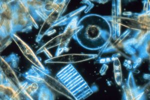

Ökosüsteemides elavad tootjaid, tarbijaid ja lagundajaid. Kõiki organisme, kes kasutavad päikeseenergiat ning suudavad selle abil ise orgaanilisi molekule (nt glükoosi) toota, nimetatakse tootjateks. Siia hulka kuuluvad kõik taimed ning osad bakterid. Tarbijad (ja lagundajad) saavad oma energia teiste organismide söömisest. Kõik loomad on tarbijad. Primaarproduktsioon on protsess, mille läbi tootjad valmistavad anorgaanilistest ainetest uusi orgaanilisi molekule (tavaliselt fotosünteesi käigus).
Veeökosüsteemides toimub edasine jaotumine makrofüütideks (suuremad veetaimed) ja fütoplanktoniks. Mõiste plankton viitab veeökosüsteemides hõljuvatele, valdavalt mikroskoopilistele, organismidele. Mõned planktoniliigid on tootjad (fütoplankton, nt vetikad), teised aga kuuluvad tarbijate gruppi (zooplankton, nt vesikirbud). Paljudes veeökosüsteemides on peamiseks tootjaks fütoplankton.
Kuidas primaarproduktsiooni mõõta? Nagu eespool kirjeldatud, hõlmab primaarproduktsioon tavaliselt fotosünteesi ning orgaaniliste molekulide hulga kasvu. Järelikult oleks tootjate üldkaal ise heaks primaarproduktsiooni määra mõõduks ökosüsteemis. Tavaliselt kasutatakse selleks otstarbeks mõistet biomass. Biomassi defineeritakse kui teatud ökosüsteemis kindlal ajahetkel olevat elusorganismide kogumassi. Seejuures võib biomassi mõõta kui organismide kogukaalu või kuivmassi (kui kogu vesi on eemaldatud). Vahel arvestatakse ökosüsteemi biomassina kõiki organisme, kuid meie keskendume oma missiooni kontekstis vaid tootjate kaalule.
Ainuraksed ränivetikad (üks olulisemaid fütoplanktoni gruppe) nähtuna mikroskoobis. allikas: Wikipedia / NOAA Corps Collection